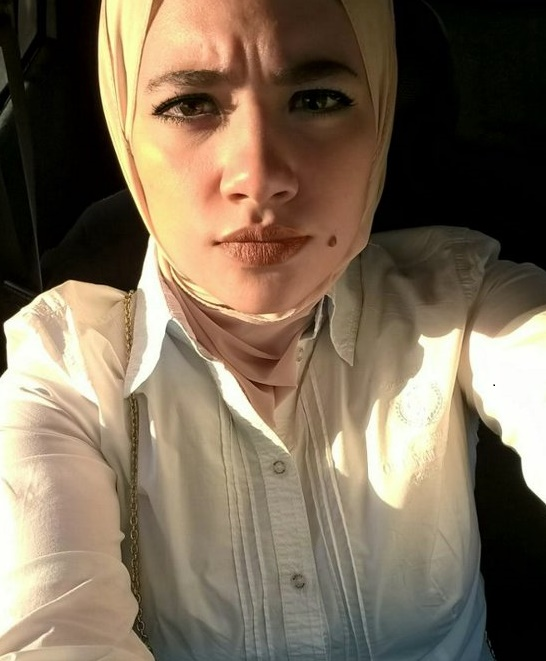
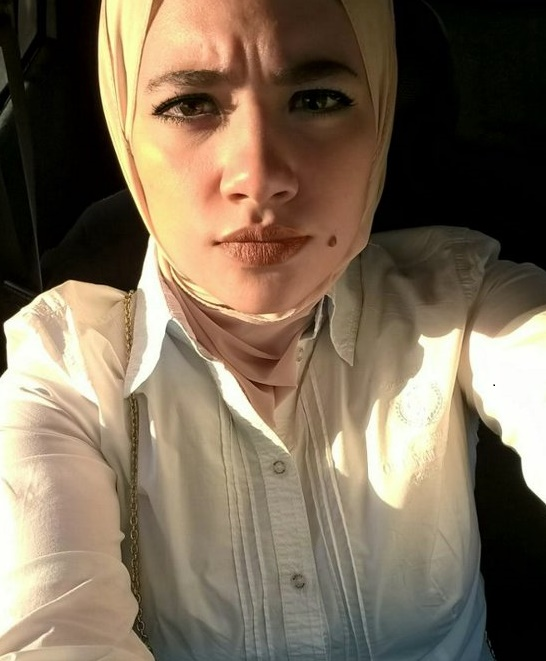

HOME | EDUCATION | SKILLS | HOBBIES Photographing Handmades Travelling Reading | TRAINING & EXPERIENCE
YUMNA ELEBIARY
About ME
I'm Egyptian female lives in Cairo Egypt. I'm a BISian (Business Information System Helwan University) student in the senior year.
I was born on the 1st of October 1994.Your mind is so powerful when you fill it with positive thoughts, your life will start to change,Ignore all your negative thoughts,doubts and fears,start from HERE.I worked so many times to build up my experiences and to have a shortcut way to work after Graduating. My dream was to make a difference in the world by making any thing better.
i loved trying new things since i was very young. I played Piano and took so many courses in it,my teacher used to call me " MY Mircale ".
I realized something on the ride.
I realized if I wait until I'm not scared to try new things, then I'll never get to try them at all.
And then i started swimming i have always loved the sea!!
I tried SO many things and my parents have always my back in everything i wanted. I have to try everything until i find my niche.When you make the decision to start something new, first figure out the jobs you want to do. Then position yourself to play where no one else is playing.
You will never know how much you can accomplish until you try. Never stop trying. Your miracle will come in undefined moments. Mail Moly.ebiary@gmail.com


Follow Me on Social Networks